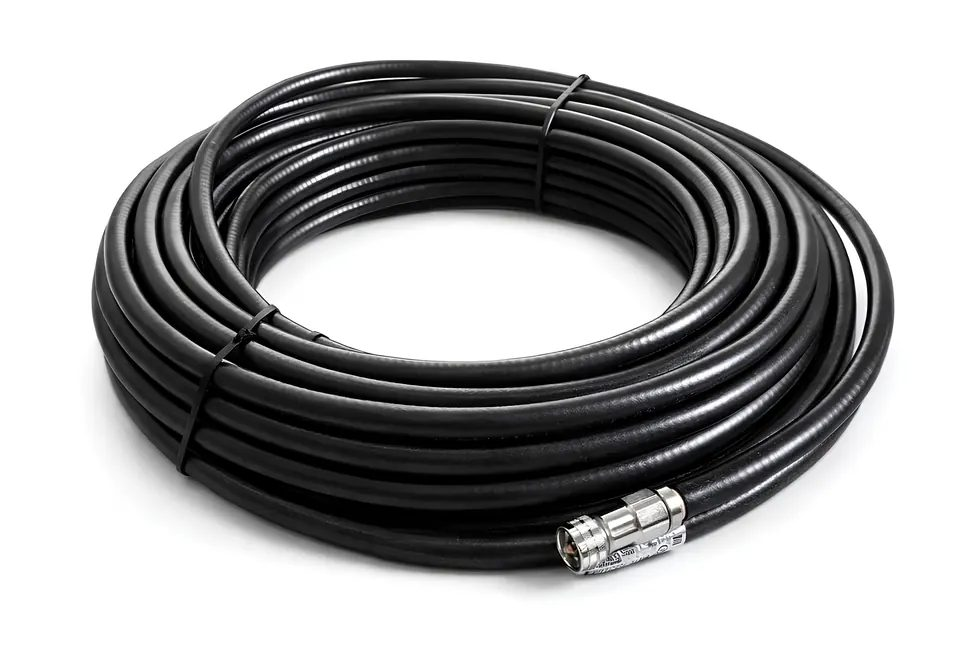
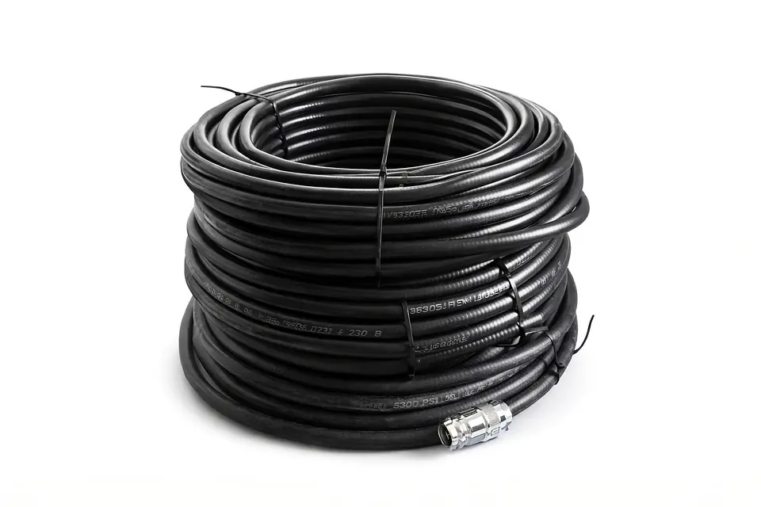
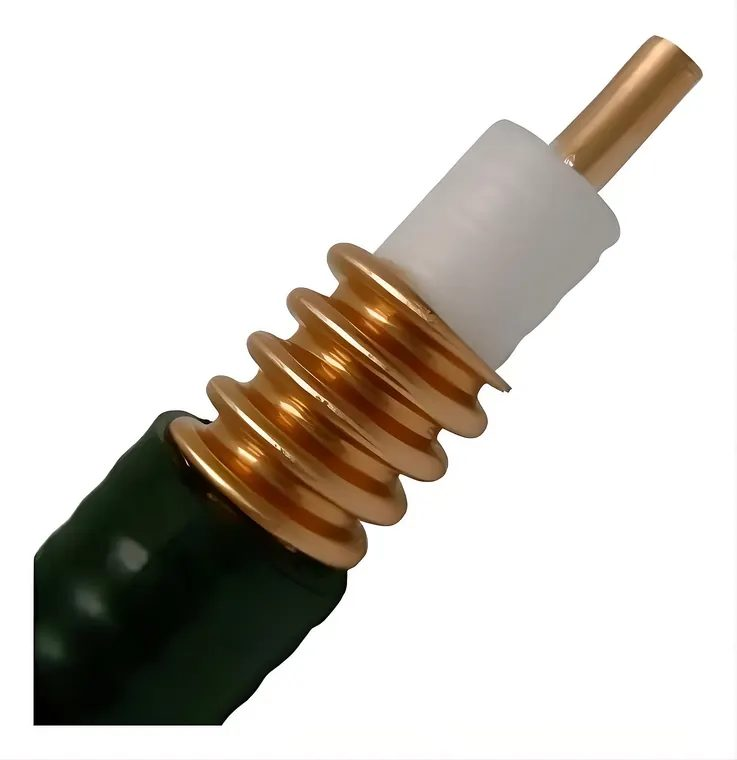
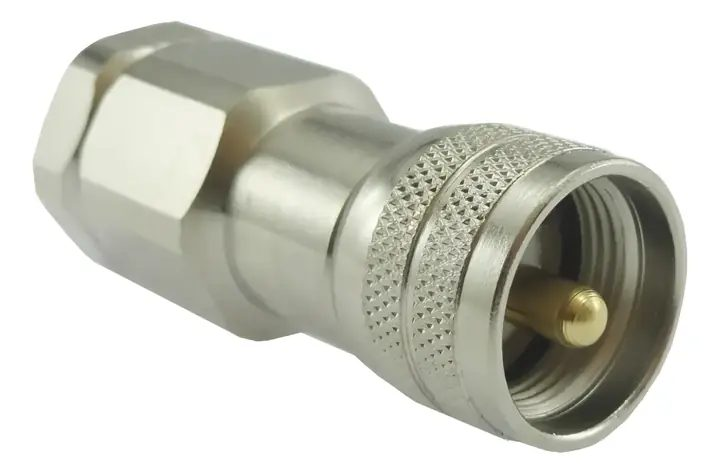

Antenas e torres
Alimentacao de antenas em instalacoes externas que exigem cabo coaxial mais robusto.
Cabo coaxial 1/2 para RF
Baixa perda, blindagem robusta e construcao pronta para instalacoes onde sinal fraco custa dinheiro.
Informe a metragem e confirme disponibilidade direto no WhatsApp.


Cellflex 1/2 e procurado em RF porque combina baixa perda, blindagem e resistencia mecanica melhor que cabos comuns em instalacoes exigentes.
E o tipo de cabo que faz sentido para antenas, radio, repetidoras, enlaces, telecom e montagens em que cada metro precisa trabalhar a favor do sistema.
O publico certo para esse produto sabe que cabo ruim mata alcance, aumenta perda e vira retrabalho.
Alimentacao de antenas em instalacoes externas que exigem cabo coaxial mais robusto.
Projetos de comunicacao que precisam de linha de transmissao 50 Ohms com perda menor.
Ambientes onde estabilidade e blindagem ajudam a manter o sistema trabalhando direito.
Uso em infraestrutura RF, interligacoes e passagens que pedem cabo coaxial de 1/2.
Montagens em que a perda do cabo precisa ser levada a serio antes da instalacao.
Voce informa metragem e necessidade de conector para confirmar o pedido.
Sem banco de imagem enganando comprador. As imagens mostram o rolo, o corte do cabo e o conector UHF macho PL-259.
Antes de comprar, confirme metragem, uso, conector e envio. Produto tecnico bom nao se vende no chute.


Manda a medida que voce precisa. Se tambem precisar de conector UHF macho PL-259, ja avisa na mensagem para confirmar disponibilidade.
Resposta direta para tirar a duvida e chamar no WhatsApp com o pedido certo.
Sim. A oferta e para Cabo Cellflex 1/2 50 Ohms por metro. Confirme a metragem e a aplicacao antes de fechar.
Serve para aplicacoes RF que pedem cabo coaxial de 50 Ohms, como antenas, radios, repetidoras e telecom. Confirme se sua instalacao pede 1/2.
O foco da oferta e o cabo por metro. Se precisar com conector UHF macho PL-259 ou montagem, chame no WhatsApp para confirmar.
R$ 30,00 o metro. A disponibilidade, metragem final, retirada ou envio sao confirmados pelo WhatsApp.
Manda a metragem no WhatsApp. Quem sabe o que esta comprando nao precisa de enrolacao.
Chamar no WhatsApp